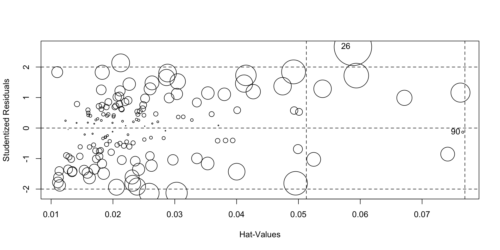

The purpose of this project is to solve a problem using linear regression and understand various feature selection and model selection techniques. In this project we predict the landing distance of the aircrafts based on different details. There have been many major mishaps during the landing of the aircraft, resulting in the loss of many lives. The data used in this project can be found here.
Information about various parameters such as, pitch, ground speed, air speed, height etc. of Airbus and Boeing aircrafts is given for the study.
We have to come up with a robust regression model that can predict the landing distance.
library(readxl)
library(ggplot2)
library(dplyr)
library(GGally)
library(leaps)
library(gridExtra)
library(plotly)
library(mvinfluence)
library(ggthemes)The data is stored in two excel sheets called FAA1 and FAA2 respectively. We need to load these sheets, analyse the data for completeness and then combine the two datasets into one.
str(faa1)## Classes 'tbl_df', 'tbl' and 'data.frame': 800 obs. of 8 variables:
## $ aircraft : chr "boeing" "boeing" "boeing" "boeing" ...
## $ duration : num 98.5 125.7 112 196.8 90.1 ...
## $ no_pasg : num 53 69 61 56 70 55 54 57 61 56 ...
## $ speed_ground: num 107.9 101.7 71.1 85.8 59.9 ...
## $ speed_air : num 109 103 NA NA NA ...
## $ height : num 27.4 27.8 18.6 30.7 32.4 ...
## $ pitch : num 4.04 4.12 4.43 3.88 4.03 ...
## $ distance : num 3370 2988 1145 1664 1050 ...str(faa2)## Classes 'tbl_df', 'tbl' and 'data.frame': 150 obs. of 7 variables:
## $ aircraft : chr "boeing" "boeing" "boeing" "boeing" ...
## $ no_pasg : num 53 69 61 56 70 55 54 57 61 56 ...
## $ speed_ground: num 107.9 101.7 71.1 85.8 59.9 ...
## $ speed_air : num 109 103 NA NA NA ...
## $ height : num 27.4 27.8 18.6 30.7 32.4 ...
## $ pitch : num 4.04 4.12 4.43 3.88 4.03 ...
## $ distance : num 3370 2988 1145 1664 1050 ...We can observe that the column duration is missing from FAA2 dataset. We need to introduce this column in order to merge two dataframes. We also check if we have any duplicate records in the combined dataframe.
# the column 'duration' is missing from faa2 dataframe
faa2$duration<-NA
# Now, we can concatinate the two dataframes
faa<-rbind(faa1,faa2)
str(faa)## Classes 'tbl_df', 'tbl' and 'data.frame': 950 obs. of 8 variables:
## $ aircraft : chr "boeing" "boeing" "boeing" "boeing" ...
## $ duration : num 98.5 125.7 112 196.8 90.1 ...
## $ no_pasg : num 53 69 61 56 70 55 54 57 61 56 ...
## $ speed_ground: num 107.9 101.7 71.1 85.8 59.9 ...
## $ speed_air : num 109 103 NA NA NA ...
## $ height : num 27.4 27.8 18.6 30.7 32.4 ...
## $ pitch : num 4.04 4.12 4.43 3.88 4.03 ...
## $ distance : num 3370 2988 1145 1664 1050 ...# Removing duplicates from the dataframe
dim(unique(faa))## [1] 950 8We have been given following information to decide whether an observation is an outlier or not:
Based on this information, we clean the dataset.
faa<-faa%>%filter(duration>40,speed_ground >= 30, speed_ground <=140,speed_air >= 30, speed_air <=140,height >=6,distance<6000)
summary(faa)## aircraft duration no_pasg speed_ground
## Length:195 Min. : 45.5 Min. :41.00 Min. : 88.69
## Class :character 1st Qu.:115.9 1st Qu.:56.00 1st Qu.: 95.28
## Mode :character Median :149.3 Median :60.00 Median :100.75
## Mean :150.9 Mean :59.83 Mean :103.43
## 3rd Qu.:185.4 3rd Qu.:65.00 3rd Qu.:109.57
## Max. :287.0 Max. :80.00 Max. :132.78
## speed_air height pitch distance
## Min. : 90.00 Min. : 9.697 Min. :2.702 Min. :1741
## 1st Qu.: 96.15 1st Qu.:23.365 1st Qu.:3.636 1st Qu.:2161
## Median :100.89 Median :29.837 Median :4.070 Median :2526
## Mean :103.50 Mean :30.359 Mean :4.043 Mean :2784
## 3rd Qu.:109.42 3rd Qu.:36.590 3rd Qu.:4.442 3rd Qu.:3186
## Max. :132.91 Max. :58.228 Max. :5.311 Max. :5382Once the data is cleaned, we sample 80% of the observation for training the regression model and the rest 20% for testing the model-
rows<-sample(195,0.8*195,replace = FALSE)
train<-faa[rows,]
test<-faa[-rows,]
# checking the correlation among variables
ggpairs(train) Since the dataset is small, we can use best subset selection for variable selection. Best subset selection algorithm will look for best subset of predictors that closely relate with the response variable. This method may not be best suited when the number of variables are too large.
We will use-
As creterion for selecting the best subset of predictors for our linear model.
#Best subset variable selection
best.subset<-regsubsets(distance~.,data = train,nvmax = 7)
best.subset.summary <- summary(best.subset)
# Now, we will use different criterion to select the best subset of the predictors for our problem
# 1. Adjused R squared
p1<-ggplot(data = NULL,aes(x=1:7,y = best.subset.summary$adjr2))+geom_line(color='white')+labs(x='Index',y='Adjusted R Squared',title='Adjusted R Squared')+
theme_hc(bgcolor = "darkunica")
# 2. CP
p2<-ggplot(data = NULL,aes(x=1:7,y = best.subset.summary$cp))+geom_line(color='white')+labs(x='Index',y='CP',title='CP')+
theme_hc(bgcolor = "darkunica")
# 3. BIC
p3<-ggplot(data = NULL,aes(x=1:7,y = best.subset.summary$bic))+geom_line(color='white')+labs(x='Index',y='BIC',title='BIC')+
theme_hc(bgcolor = "darkunica")
grid.arrange(p1,p2,p3)From above graphs, it is visible that-
Thus,subset with index 3, is the best subset that leads to optimum results. We will use this subset for our linear model.
# The best model is model with index 3.
best.subset.summary$outmat[3,]## aircraftboeing duration no_pasg speed_ground speed_air
## "*" " " " " " " "*"
## height pitch
## "*" " "The best subset contains predictors- Aircraft, speed_air and height.
Before model the building, we try to visualise the relationship among the variables in a 3D graph just to get a sense of the data-
p <- plot_ly(train, x = ~speed_air, y = ~distance, z = ~height, color = ~aircraft, colors = c('red', 'blue'),alpha=0.5) %>%
add_markers() %>%
layout(scene = list(xaxis = list(title = 'Air Speed'),
yaxis = list(title = 'Landing Distance'),
zaxis = list(title = 'Height')))
pWe go ahead with building the model-
# Building linear regression model
model<-lm(data=train, distance~speed_air+aircraft+height)
summary(model)##
## Call:
## lm(formula = distance ~ speed_air + aircraft + height, data = train)
##
## Residuals:
## Min 1Q Median 3Q Max
## -282.69 -100.70 19.50 92.79 343.84
##
## Coefficients:
## Estimate Std. Error t value Pr(>|t|)
## (Intercept) -6406.368 129.300 -49.55 <2e-16 ***
## speed_air 82.128 1.136 72.30 <2e-16 ***
## aircraftboeing 434.082 22.230 19.53 <2e-16 ***
## height 13.659 1.148 11.90 <2e-16 ***
## ---
## Signif. codes: 0 '***' 0.001 '**' 0.01 '*' 0.05 '.' 0.1 ' ' 1
##
## Residual standard error: 135.8 on 152 degrees of freedom
## Multiple R-squared: 0.973, Adjusted R-squared: 0.9724
## F-statistic: 1823 on 3 and 152 DF, p-value: < 2.2e-16par(mfrow=c(2,2))
plot(model)par(mfrow=c(1,1))
infIndexPlot(model, var="cook", main="Index Influence Plot")From the graphs we can see that- * The residuals are normally distributed (Q-Q plot) * The residuals have constant variance * There are no obvious high laverage or high influence points
Observation with index 6, has high Cook’s Distance, 0.11. Let’s take a closer look at this observation-
# point has high Studentized Residual > 2 but < 3
a<-as.numeric(train[6,5])
b<-as.numeric(train[6,8])
ggplot(data = train,aes(x = speed_air,y = distance,color=aircraft))+geom_point()+geom_smooth(method='lm')+
geom_point(aes(x=a,y=b),color='Purple')+annotate("text", x = 125, y = 5400, label = "Possible Outlier",col='Purple')+
theme_hc(bgcolor = "darkunica")influencePlot(model)
## StudRes Hat CookD
## 26 2.6613084 0.05881641 0.1063932807
## 90 -0.1349164 0.07658111 0.0003798453However, the Studentized Residual for that observation is less than 3. Thus, we will not consider that point to be an outlier.
Now we try to predict the landing distance of the observations from test data.
test$predictedDistance<-predict(model,test)
cor.test(test$distance,test$predictedDistance)##
## Pearson's product-moment correlation
##
## data: test$distance and test$predictedDistance
## t = 46.015, df = 37, p-value < 2.2e-16
## alternative hypothesis: true correlation is not equal to 0
## 95 percent confidence interval:
## 0.9834906 0.9955034
## sample estimates:
## cor
## 0.9913758ggplot(data = test,aes(distance,y=predictedDistance,color=aircraft))+geom_point()+labs(x='Actual Distance',
y='Predicted Distance',title='Prediction Graph')+theme_hc(bgcolor = "darkunica")We can se that the correlation coefficient between actual landing distance and the predicted landing distance is 0.9891462 with 95% Confidence Interval being 0.9792438, 0.9943379. The prediction is fairly accurate as it predicts with close to 98% accuracy.
Thus, we can say that the Liner Regression model does a good job of predicting the landing distance.